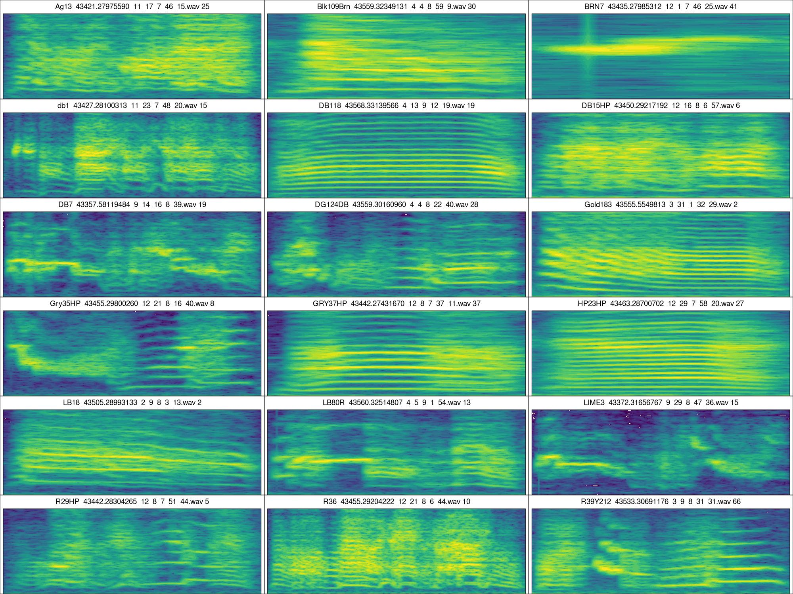

Code
# From CRAN would be
install.packages("ohun")
#load package
library(ohun)ohun
The data used in this tutorial (annotations and recordings) can be downloaded from here:
Install/load the package from CRAN as follows:
# From CRAN would be
install.packages("ohun")
#load package
library(ohun)To install the latest developmental version from github you will need the R package remotes:
remotes::install_github("maRce10/ohun")
#load package
library(ohun)library(ohun)
library(warbleR)
library(viridis)
data_path <- "DIRECTORY_WITH_SOUND_FILES_AND_ANNOTATIONS_HERE"
manual_ref <- read.csv(file.path(data_path, "manual_selections_Taeniopygia.csv"))
This code creates a multipanel image with multiple spectrograms, one for each of the individuals/recordings in the complete data set (note that the output of the function catalog are image files saved in the sound file directory):
# select highest signal to noise ratio calls per individual
manual_ref_snr <- signal_2_noise(X = manual_ref, mar = 0.05, path = data_path)
# select 1 example per sound file
high_snr <- manual_ref_snr[ave(-manual_ref_snr$SNR, manual_ref_snr$sound.files, FUN = rank) <= 1, ]
high_snr$bottom.freq <- -1
high_snr$top.freq <- 12
# create catalogs
catalog(X = high_snr, flim = c(0, 11), nrow = 6, ncol = 3, ovlp = 90, height = 15, width = 20, same.time.scale = TRUE, mar = 0.01, wl = 512, gr = FALSE, spec.mar = 0, lab.mar = 0.001, rm.axes = TRUE, by.row = TRUE, box = TRUE, pal = viridis, parallel = 10, collevels = seq(-140, 0, 5), path = data_path, img.prefix = "same.time", highlight = TRUE, alpha = 0.2)
set.seed(450)
train_files <- sample(unique(manual_ref$sound.files), 3)
test_files <- setdiff(manual_ref$sound.files, train_files)
train_ref <- manual_ref[manual_ref$sound.files %in% train_files, ]
test_ref <- manual_ref[manual_ref$sound.files %in% test_files, ]
opt_det <- optimize_energy_detector(
reference = train_ref,
files = train_files,
threshold = c(1, 5),
hop.size = 11.6,
smooth = c(5, 10),
hold.time = c(0, 5),
min.duration = c(5, 15, 25),
max.duration = c(275, 300, 325),
bp = c(0.5, 10),
path = data_path
)
# subset with highest performance
sub_opt_det <- opt_det[order(opt_det$f.score, decreasing = TRUE), ]
sub_opt_det <- sub_opt_det[1:10, c("threshold", "smooth", "hold.time", "min.duration", "max.duration", "true.positives", "false.positives", "false.negatives", "recall", "precision", "f.score")]
#print
sub_opt_det
best_param <- opt_det[which.max(opt_det$f.score), ]
best_param| X | threshold | peak.amplitude | smooth | hold.time | min.duration | max.duration | thinning | detections | true.positives | false.positives | false.negatives | splits | merges | overlap | mean.duration.true.positives | mean.duration.false.positives | mean.duration.false.negatives | proportional.duration.true.positives | duty.cycle | recall | precision | f.score | |
|---|---|---|---|---|---|---|---|---|---|---|---|---|---|---|---|---|---|---|---|---|---|---|---|
| 41 | 41 | 1 | 0 | 5 | 0 | 25 | 300 | 1 | 108 | 89 | 19 | 16 | 0 | 0 | 0.9030545 | 122 | 77 | 59 | 1.092439 | 0.2962902 | 0.847619 | 0.8240741 | 0.8356808 |
det_test <- energy_detector(
files = test_files,
threshold = best_param$threshold,
hop.size = 11.6,
smooth = best_param$smooth,
hold.time = best_param$hold.time,
min.duration = best_param$min.duration,
max.duration = best_param$max.duration,
bp = c(0.5, 10),
path = data_path
)
diagnose_detection(reference = test_ref, detection = det_test, by.sound.file = FALSE)| detections | true.positives | false.positives | false.negatives | splits | merges | overlap | recall | precision | f.score |
|---|---|---|---|---|---|---|---|---|---|
| 505 | 452 | 53 | 34 | 0 | 0 | 0.9241518 | 0.9300412 | 0.8950495 | 0.9122099 |
Session information
R version 4.1.0 (2021-05-18)
Platform: x86_64-pc-linux-gnu (64-bit)
Running under: Ubuntu 20.04.2 LTS
Matrix products: default
BLAS: /usr/lib/x86_64-linux-gnu/atlas/libblas.so.3.10.3
LAPACK: /usr/lib/x86_64-linux-gnu/atlas/liblapack.so.3.10.3
locale:
[1] LC_CTYPE=pt_BR.UTF-8 LC_NUMERIC=C
[3] LC_TIME=es_CR.UTF-8 LC_COLLATE=pt_BR.UTF-8
[5] LC_MONETARY=es_CR.UTF-8 LC_MESSAGES=pt_BR.UTF-8
[7] LC_PAPER=es_CR.UTF-8 LC_NAME=C
[9] LC_ADDRESS=C LC_TELEPHONE=C
[11] LC_MEASUREMENT=es_CR.UTF-8 LC_IDENTIFICATION=C
attached base packages:
[1] stats graphics grDevices utils datasets methods base
other attached packages:
[1] viridis_0.6.2 viridisLite_0.4.1 DT_0.26 remotes_2.4.2
[5] pbapply_1.6-0 Rraven_1.0.13 ohun_0.1.0 warbleR_1.1.28
[9] NatureSounds_1.0.4 knitr_1.42 seewave_2.2.0 tuneR_1.4.1
loaded via a namespace (and not attached):
[1] tidyselect_1.2.0 xfun_0.36 colorspace_2.0-3 vctrs_0.5.2
[5] generics_0.1.3 htmltools_0.5.4 yaml_2.3.7 utf8_1.2.2
[9] rlang_1.0.6 jquerylib_0.1.4 pillar_1.8.1 DBI_1.1.1
[13] glue_1.6.2 lifecycle_1.0.3 munsell_0.5.0 gtable_0.3.1
[17] htmlwidgets_1.5.4 evaluate_0.20 fastmap_1.1.0 fftw_1.0-7
[21] crosstalk_1.2.0 parallel_4.1.0 fansi_1.0.3 Rcpp_1.0.9
[25] scales_1.2.1 jsonlite_1.8.4 Sim.DiffProc_4.8 gridExtra_2.3
[29] Deriv_4.1.3 rjson_0.2.21 ggplot2_3.4.0 digest_0.6.31
[33] dplyr_1.0.10 dtw_1.23-1 grid_4.1.0 cli_3.6.0
[37] tools_4.1.0 bitops_1.0-7 magrittr_2.0.3 RCurl_1.98-1.9
[41] proxy_0.4-27 tibble_3.1.8 crayon_1.5.2 pkgconfig_2.0.3
[45] MASS_7.3-54 assertthat_0.2.1 rmarkdown_2.20 rstudioapi_0.14
[49] R6_2.5.1 signal_0.7-7 igraph_1.3.5 compiler_4.1.0